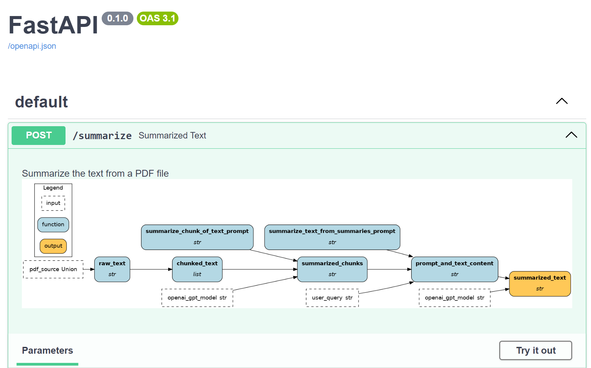

FastAPI¶
FastAPI is an open-source Python web framework to create APIs. It is a modern alternative to Flask and a more lightweight option than Django. In FastAPI, endpoints are defined using Python functions. The parameters indicate the request specifications and the return value specifies the response. Decorators are used to specify the HTTP methods (GET, POST, etc.) and to route the request.
from typing import Union
from fastapi import FastAPI
app = FastAPI() # Instantiate the FastAPI server
@app.get("/") # GET method with base route "/"
def read_root():
return {"Hello": "World"}
@app.get("/items/{item_id}") # dynamic route with variable `item_id`
def read_item(item_id: int, q: Union[str, None] = None):
return {"item_id": item_id, "q": q}
if __name__ == "__main__":
# launch the server with `uvicorn`
import uvicorn
uvicorn.run(app, host="0.0.0.0", port=8000) # specify host and port
On this page, you’ll learn how Apache Hamilton can help you:
Test you application
Reduce the friction from proof-of-concept to production
Document your API
Challenges¶
1. Test your FastAPI application¶
FastAPI endpoints are simply decorated Python function, allowing a great deal of flexibility as to what is executed (functions, classes, web requests, etc.). On one hand, we want to test that endpoints are defined and behave properly by starting a server and testing the GET, POST, etc. requests. FastAPI provides great documentation and tooling to do so. On the other hand, these tests conflate the role of the FastAPI server and the endpoint behavior. To run them, a server-client pair need to be created, which will slow down your test suite, and endpoints need to be mocked to avoid connecting to a production environment. By coupling the role of the FastAPI server and the endpoint behavior, more efforts and resources are needed to write and run tests. The content of the endpoints and the structure of your codebase might make it difficult to test endpoint logic outside the context of a FastAPI server.
2. Document your API¶
FastAPI already does a great job at automating API documentation by integrating with Swagger UI and OpenAPI. It leverages the endpoints’ name, path, docstring, and type annotations, and also allows to add descriptions and example inputs. However, since docstrings, descriptions, and example inputs are not directly tied to the code, they risk becoming out of sync as changes are made.
Apache Hamilton + FastAPI¶
Adding Apache Hamilton to your FastAPI server can provide a better separation between the dataflow and the API endpoints. Each endpoint can use Driver.execute() to request variables and wrap results into an HTTP response. Then, data transformations and interactions with resources (e.g., database, web service) are curated into standalone Python modules and decoupled from the server code.
Since Apache Hamilton dataflows will run the same way inside or outside FastAPI, you can write simpler unit tests for Apache Hamilton functions without defining a mock server and client. Additionnally, visualizations for the defined Apache Hamilton dataflows can be added to the FastAPI Swagger UI documentation. They will remain in sync with the API behavior because they are generated from the code.
Example¶
In this example, we’ll build a backend for a PDF summarizer application.
The full code can be found on GitHub
Client¶
The client defines an HTTP POST request to send a PDF file along a selected OpenAI GPT model, the content type of the PDF file, and a query for the summarization. The files parameter allows for multipart encoding uploads and data sets the content of the body of the request.
# client.py
from typing import IO
import requests
def post_summarize(
uploaded_pdf: IO[bytes],
openai_gpt_model: str,
content_type: str,
user_query: str,
) -> requests.Response:
"""POST request to summarize a PDF via the `/summarize` endpoint"""
return requests.post(
url="http://0.0.0.0:8000/summarize", # http://HOST:PORT/ENDPOINT as specified in server.py
files=dict(pdf_file=uploaded_pdf),
data=dict(
openai_gpt_model=openai_gpt_model,
content_type=content_type,
user_query=user_query,
),
)
💡 For more complex FastAPI applications, you can automatically generate the client code in Python and other languages (TypeScript, Rust, etc.)
Backend dataflow with Apache Hamilton¶
Apache Hamilton transformations are defined in the module summarization.py. This includes loading and chunking the raw text, summarizing chunks with the OpenAI API, and reducing chunks into a final summary.
Visualization of the Apache Hamilton dataflow

Server definition with FastAPI¶
Then, the FastAPI server is defined in server.py. Notice a few things:
the
Driveris built only once in the global context.the endpoint types are set using
Annotated[...]to accept multipart encoded formsthe HTTP POST request is passed as
inputstoDriver.execute()the Apache Hamilton results are wrapped into a Pydantic
SummarizeResponsemodel
# server.py
from typing import Annotated
from fastapi import FastAPI, Form, UploadFile
from pydantic import BaseModel
from hamilton import driver
import summarization
app = FastAPI()
# build the Apache Hamilton driver with the summarization module
dr = (
driver.Builder()
.with_modules(summarization)
.build()
)
class SummarizeResponse(BaseModel):
"""Response to the /summarize endpoint"""
summary: str
@app.post("/summarize") # POST request, `/summarize` endpoint
def summarize_pdf(
pdf_file: Annotated[UploadFile, Form()],
openai_gpt_model: Annotated[str, Form()],
content_type: Annotated[str, Form()],
user_query: Annotated[str, Form()],
) -> SummarizeResponse:
"""Summarize the text from the PDF file"""
results = dr.execute(
["summarized_text"],
inputs=dict(
pdf_source=pdf_file.file,
openai_gpt_model=openai_gpt_model,
content_type=content_type,
user_query=user_query,
),
)
return SummarizeResponse(summary=results["summarized_text"])
if __name__ == "__main__":
import uvicorn
uvicorn.run(app, host="0.0.0.0", port=8000) # specify host and port
Visualize endpoints’ dataflow¶
The Apache Hamilton dataflow visualizations can be added to the automatically generated FastAPI Swagger UI documentation, which can be viewed at http://0.0.0.0:8000/docs
# server.py
# ... after defining all endpoints
# get the visualization
visualization = dr.visualize_execution(["summarized_text"], inputs=dict(pdf_source=bytes(), openai_gpt_model="", user_query=""))
# encode the PNG object into a base64 string
base64_viz = base64.b64encode(visualization.pipe(format="png")).decode("utf-8")
# route[-1] is the last defined, i.e. `/summarize`
# append the base64 string of a PNG to the API endpoint text description
app.routes[-1].description += f"""<img src="data:image/png;base64,{base64_viz}"/"""
# ... before `if __name__ == "__main__":`
📞 If you are interested in a generic approach to add visualizations to all of your endpoints, please reach out to us on Slack!

Benefits¶
Separation of concerns: the decoupling between
server.pyandsummarization.pymakes it easier to extend and test the server separately from the data transformations.Reusable code: the module
summarization.pycan be reused elsewhere with Apache Hamilton. For instance, if you first started by building a proof-of-concept with Streamlit + Apache Hamilton, the logic you produced could be reused to power your FastAPI server.Richer documentation: Apache Hamilton allows to view and better understand the dataflow of an operation. This helps onboard new API users and greatly facilitates transferring the ownership of the API to other engineers.